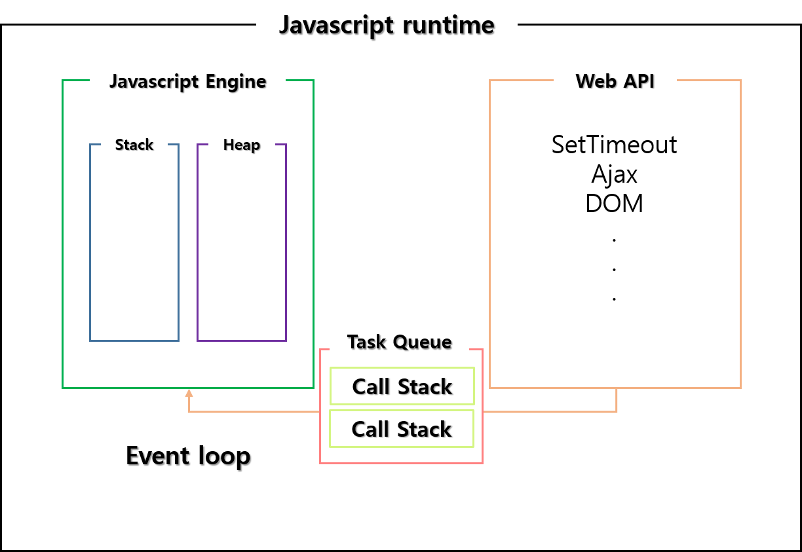

- Javascript 동작원리
- 2021.03.25 김수현
- 1. 런타임(런타임 환경)
-
: 프로그래밍 언어가 구동되는 환경. 자바스크립트 런타임환경은 프로그램에 실행동안 사용 가능한 내장된 라이브러리를 제공
* 자바스크립트 런타임 구성
자바스크립트 엔진 / Web API / 콜백큐 / 이벤트루프 / 렌더큐
- 
- 1-1. Javascript engine
-
: 자바스크립트 코드를 실행하는 프로그램 혹은 인터프리터. 메모리 힙(Memory Heap) + 콜 스택(Call Stack)
* 메모리 힙(Memory Heap) : 메모리 할당이 일어나는 곳, 선언한 변수, 함수 등이 담김
* 콜 스택(Call Stack) : 함수가 실행되는 순서를 기억, 선입후출
* 구글의 경우 V8 사용
- 1-2. Web API
-
: 자바스크립트 엔진에서 정의되지 않았던 setTimeout / Http 요청 메서드 / DOM 이벤트 등의 메서드 지원.
CallStack에서 실행된 비동기 함수는 Web API를 호출하고, Web API는 콜백 함수를 Task Queue에 넣는다.
- 1-3. Task Queue
-
: 실행이 필요한 작업 아이템을 지니고 있는 큐. Web API에서 넘겨받은 Callback 함수를 큐 형태로 저장한다.
- 1-4. Event Loop
-
: CallStack과 Task Queue를 관찰하는 역할. Event Loop는 CallStack과 Task Queue의 상태를 체크하여, CallStack이 비어 있을 때, Task Queue의 첫번째 콜백을 CallStack에 쌓는다.
- 2. 동작원리
-
[이미지 출처] https://beomy.github.io/tech/javascript/javascript-runtime/

-
1. 콜스택에서 실행된 비동기 함수 Web API 호출
2. Web API는 (이벤트 발생시 실행할) 콜백함수를 콜백 큐에 순차적으로 적재(큐는 선입선출 구조)
3. 콜백 큐에 적재된 함수들은 콜스택에 쌓여있던 모든것들이 모두 제거되면 차례대로 스택에 쌓여서 실행(이벤트 루프)